Blue Mountains
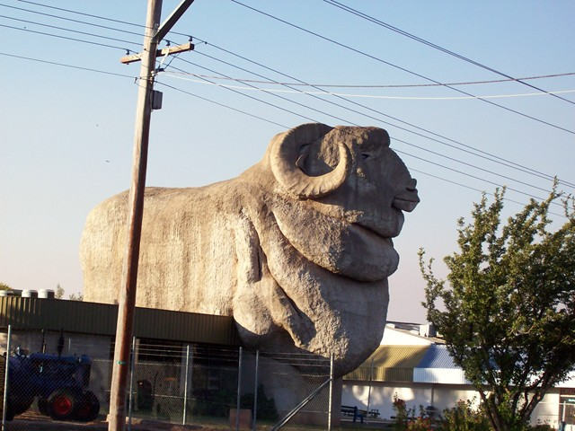
Rode to the Blue Mountains last weekend, through the town of Goulburn ("Gulbn"), gateway to sheep country.
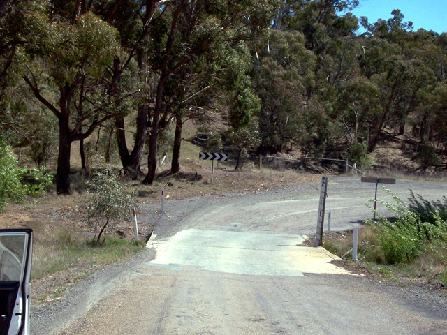
The NRMA map said the road north from Goulburn was a major road. Parts of it are paved.
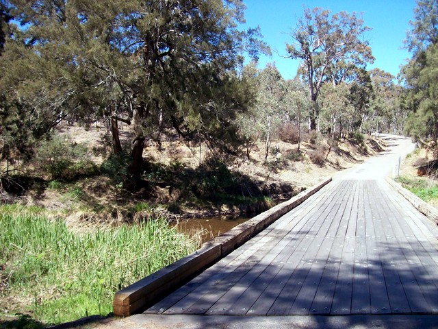
Plank bridge over major road.
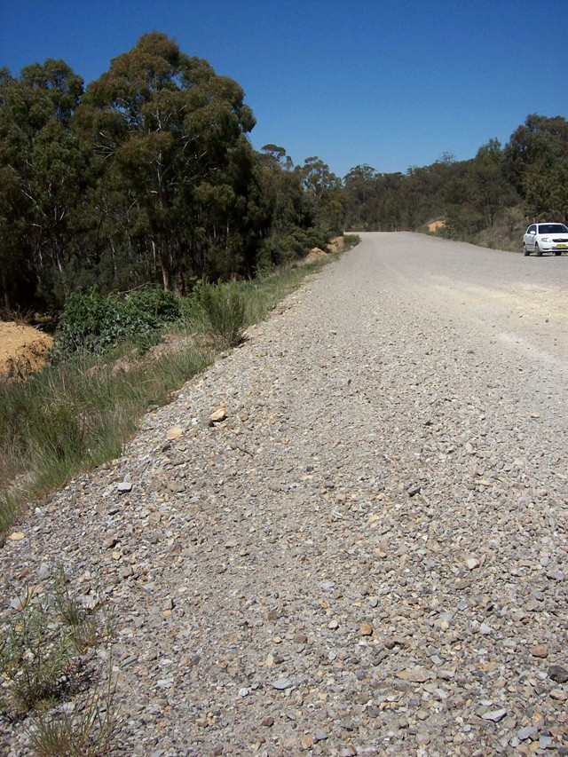
The bike blew the rear shock after 12 km of this sort of major road, about 4 hrs into the trip. Suddenly my softail became a hardtail that said "Turn? I forgot how! Let's fall over instead." Limped slowly back to Canberra. (Saw an interview with an old Hell's Angel who rode hardtail choppers in the sixties and said that most of his friends can barely walk because of disc problems.)
I couldn't believe the shock blew. Neither could the mechanic. He said it had been 10 years since he'd replaced a softail shock. (At first I thought it must be the tyre, and since I didn't hear rim scraping, I must be riding on a ribbon of rubber still clinging to the rim., I was afraid to look because then I'd be sure I'd never make it to ride to the next town, which was 54km away. So I didn't look for 54km).
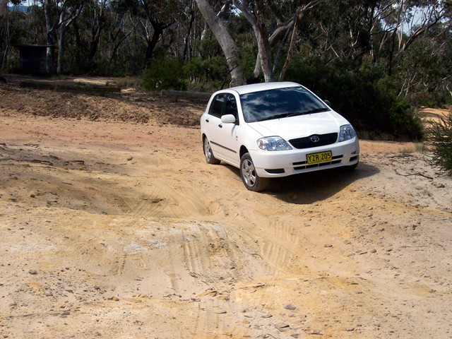
Drove the Wiser Car (well, check the tags) up the next day. This is a secondary road.
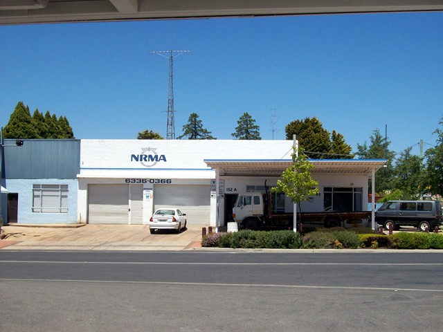
Anyway, when I made it to Oberon, guess who was there? Fortunately for them, they were closed so I couldn't make them eat the map.
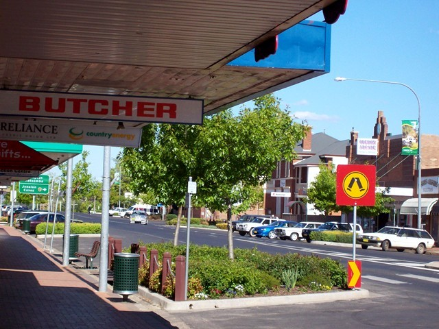
Oberon. The only ATM in town was safely locked inside the bank lobby for the weekend.
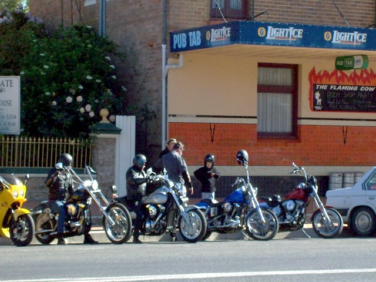
Oberon is a biker hangout, and I had plenty of sympathy. The Blue Mts. are full of sports cars and bikes from Sydney on the weekends. I always pulled over for bikes because I know how frustrating it is to want to do a twistee and get stuck behind some arsehole doing the speed limit. There's also a Rebels clubhouse in Lithgow, one of the six major 1% clubs. It was kinda pathetic--beat up vans parked outside (merchandise?) and guys who looked like they forgot the second of the two rules of gangbanging: NEVER GET HIGH ON YOUR OWN SUPPLY. (It's simpler than medicine, which has four rules.)
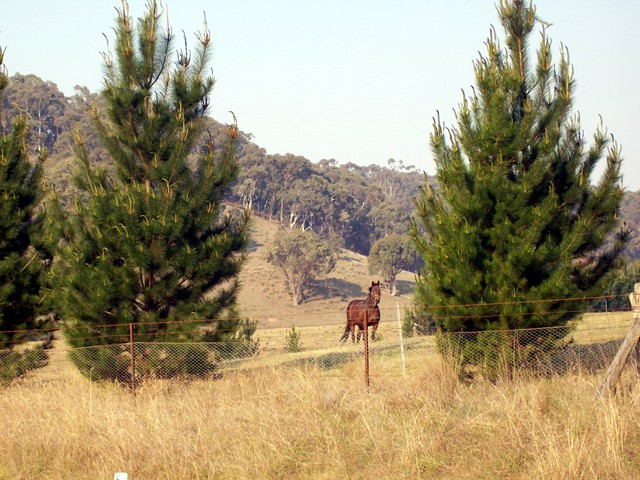
There were cows and calves, sheep and ewes on the road. Because of the drought, they had been let out to graze along the margins.
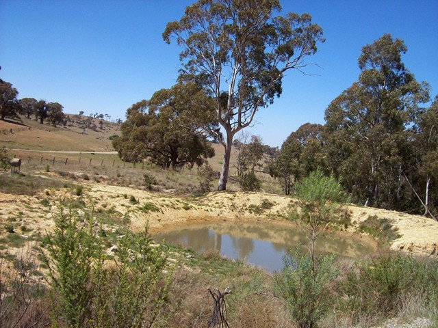
Rare waterhole. A lot of rural NSW looks like this.
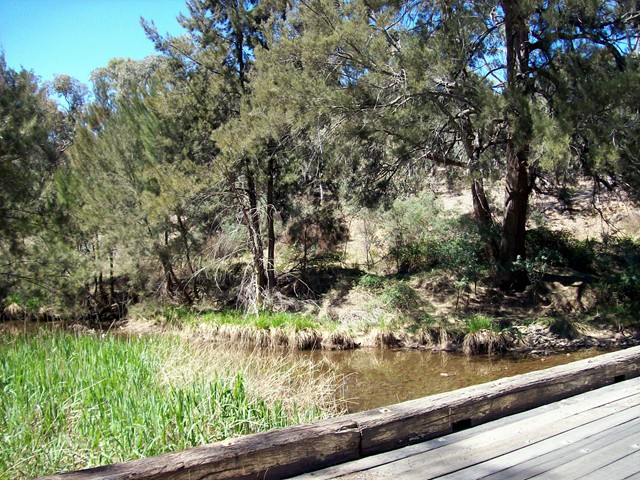
River under plank bridge.
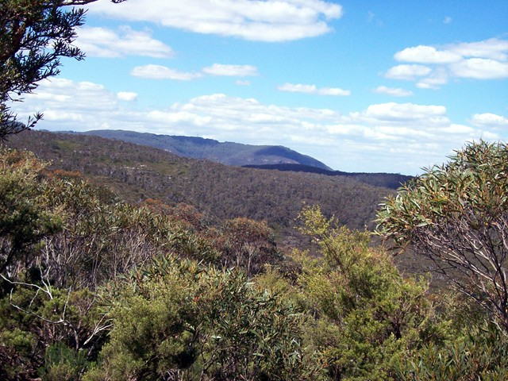
Blue mountains
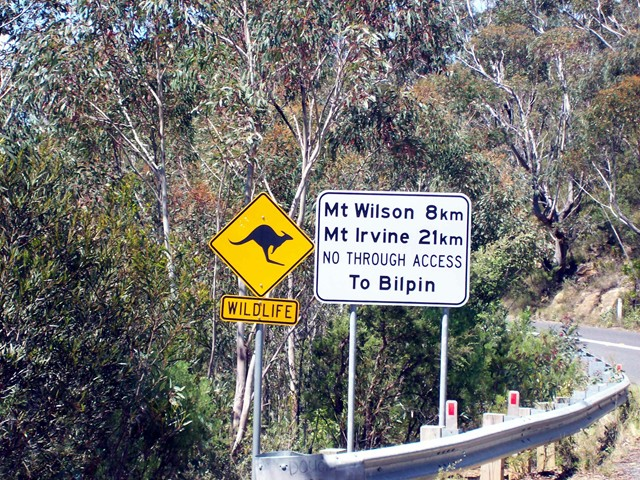
If this sign is funny, you're from SoCal.
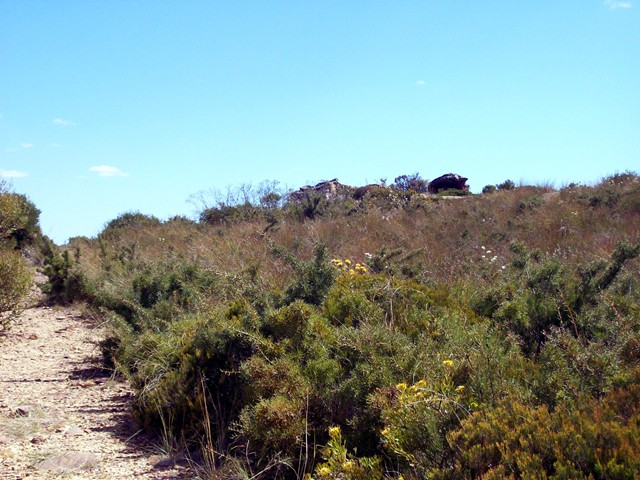
Bush along hiking trail
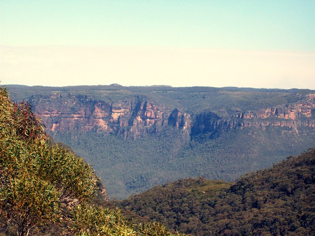
Blufs
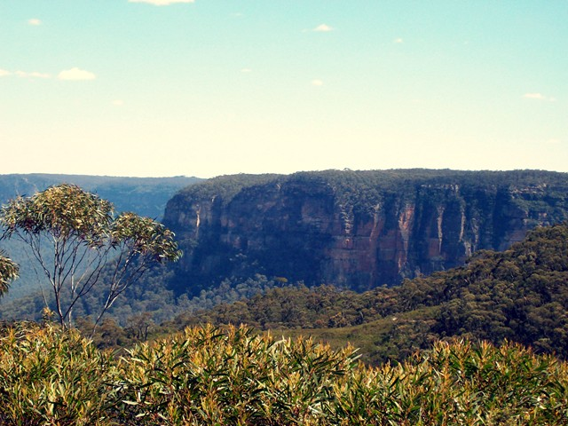
More blufs
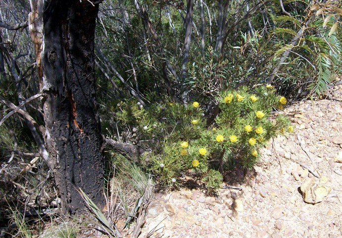
Flowers and nuts along trail
F
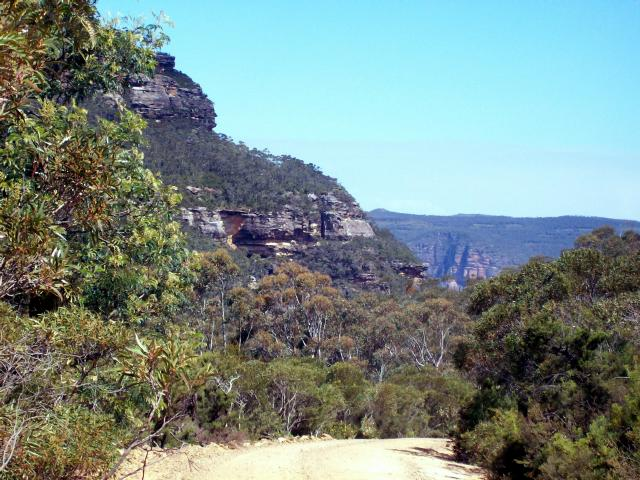
Last blufs pic.
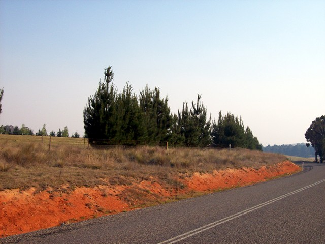
Brownish haze is from forest fires.